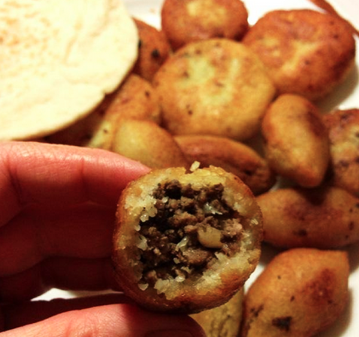

Kobba
There are different doughs you can make kubbe from but in this case I have used bulgur and my recipe follows here.
Cube dough on bulgur (approx. 4 people):
5 dl bulgur (fine-grained)
2.5 dl semolina
salt and pepper
5 dl hot water
How to prepare:
1- Mix the dry ingredients in a bowl and stir. Pour in the hot water and stir further. Let stand and infuse for about 15 minutes.
2-Then mix everything (hand mixer works well) and add a stream of more hot water (if needed) until a durable dough is formed.
The filling:
300 grams of minced meat
1 finely chopped onion
1 dl parsley
4 tablespoons of pine nuts (coarsely chopped almonds also work well)
1 tablespoon of seven spices (can be omitted or replaced with allspice)
0.5 teaspoons of cinnamon
salt and black pepper to taste
How to prepare the filling
Fry minced meat and onion in a little oil for about 10 minutes. Add the spices and let fry until the minced meat is ready.
Toast the pine nuts in a dry frying pan and then mix the pine nuts and chopped parsley with the minced meat mixture. Mix well and remove from the plate and let cool.
When you have all the parts ready, it's time to start rolling into copper and then deep-frying in a frying pan on a fairly high heat. Turn the cube so it turns golden brown all around.
